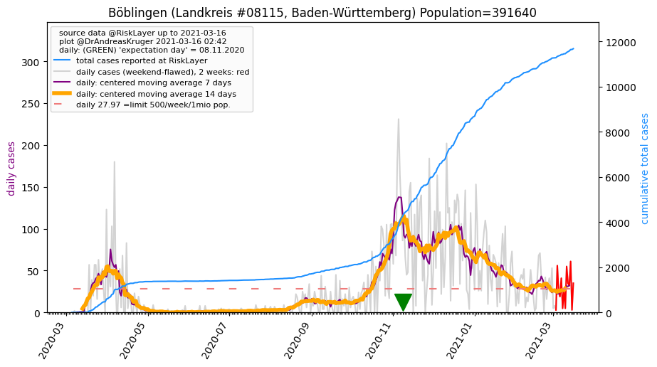
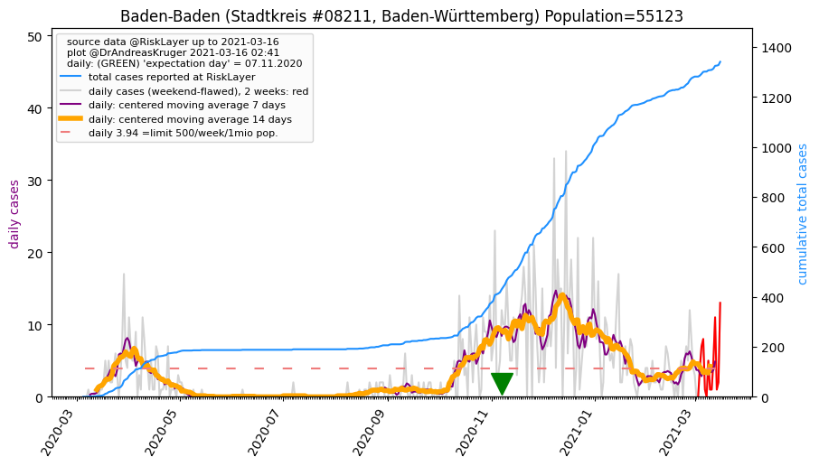
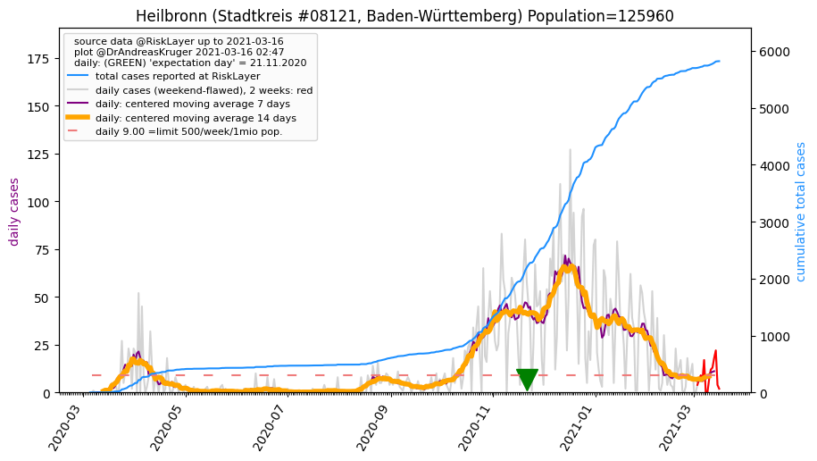
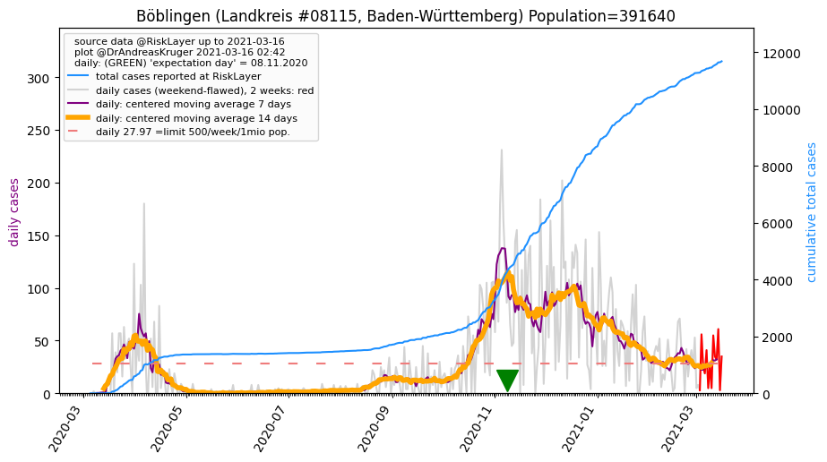
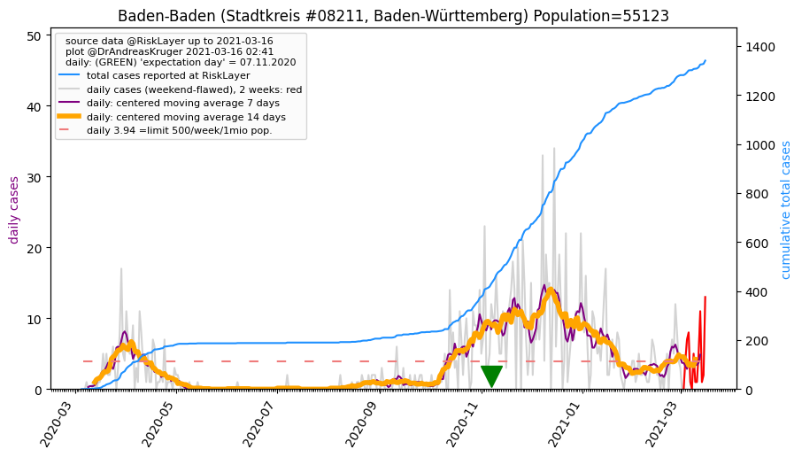
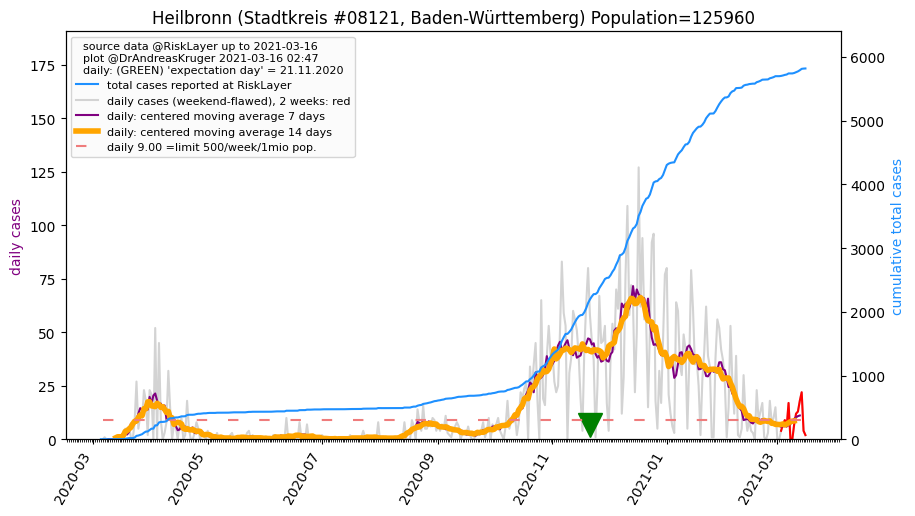

")
")
")
")
")

")
")
")

")

")
")
")
| Pforzheim_SK (0.0 km) |
Enzkreis_LK (4.6 km) |
Calw_LK (22.7 km) |
Karlsruhe_LK (25.4 km) |
| Karlsruhe_SK (26.6 km) |
Böblingen_LK (27.8 km)  |
Ludwigsburg_LK (31.0 km) |
Stuttgart_SK (35.6 km) |
| Rastatt_LK (36.9 km) |
Baden-Baden_SK (38.1 km)  |
Germersheim_LK (43.3 km) |
Heilbronn_SK (46.1 km)  |
| Freudenstadt_LK (48.3 km) |
Tübingen_LK (48.3 km) |
Heilbronn_LK (48.4 km) |
Beware that this is a temporary and experimental page - it might get removed, so please do not link to it. Instead link to project http://tiny.cc/cov19de.